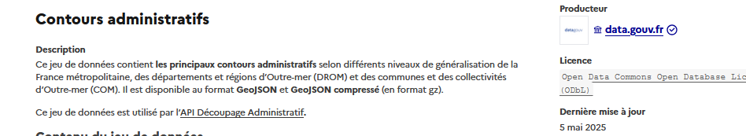
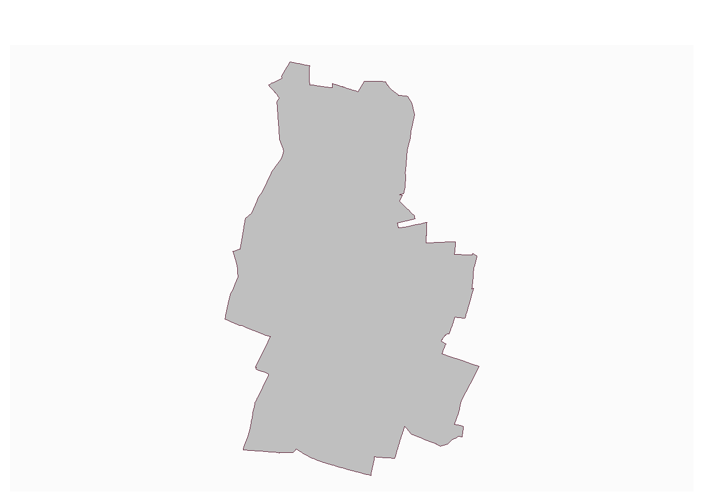
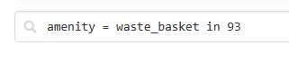
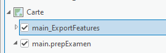
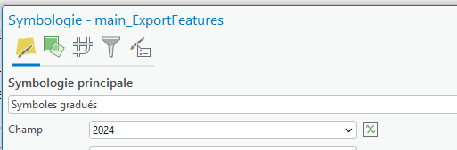
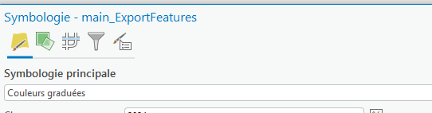
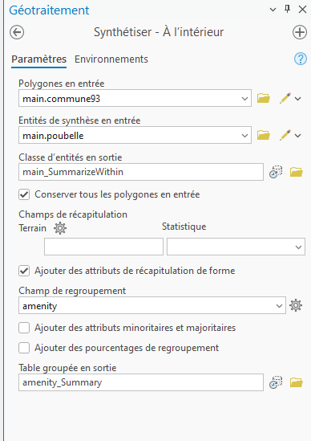

Code
library(sf) # traitement spatialLinking to GEOS 3.13.1, GDAL 3.11.4, PROJ 9.7.0; sf_use_s2() is TRUECode
library(mapsf) # cartographie
library(terra) # pour les rastersterra 1.8.93Ce cours correspond à une correction indicative pour les exercices préparatoires à l’examen. D’autres solutions sont possibles.
Librairies utilisées dans R
Linking to GEOS 3.13.1, GDAL 3.11.4, PROJ 9.7.0; sf_use_s2() is TRUEterra 1.8.93Les données seront fournies sous forme d’un .gpkg afin de permettre aux étudiants qui ne parviennent pas à les trouver de répondre aux questions suivantes.
Il sera demandé le lien vers les données aux étudiants qui ont réalisé la recherche.
Chercher par exemple la géographie des limites communales, le meilleur mot clé est contours administratifs, Prendre le jeu du producteur data.gouv Choisir le jeu le moins précis (à 1000 m)

Aller voir avec Arcgis à quoi correspondent les territoires hors métropole…
Reprendre le cours onglet GT Rasters et MNT
dans R, la librairie happign permet de récupérer toutes les données IGN de façon simple.
Please make sure you have an internet connection.Use happign::get_last_news() to display latest geoservice news.
Attachement du package : 'happign'L'objet suivant est masqué depuis 'package:terra':
relateL'objet suivant est masqué depuis 'package:base':
within
overpass.turbo permet de récupérer toutes les entités d’OSM
En cours, nous avons vu :
admin_level=8
highway=*
name ~ “arbusse”
Si nous cherchons les poubelles, le tag sera amenity=waste-basket le faire sur votre département (in et le numéro du dpt)

Attention l’intégration du geojson dans Arcgis passe par l’utilisation d’un outil spécifique
Le tableau du données représente une base possible et non exhaustive
2 couches : commune et un tableau.
Pour le tableau, j’ai exporté le [nombre d’entreprises des statistiques locales]((https://statistiques-locales.insee.fr/#c=indicator&i=ds_flores.unit_loc&s=2024&t=A01&view=map1)
commune93 <- commune [commune$departement == 93,]
nbEntreprise <- read.csv2("data/nbEntreprise.csv", skip = 2, na.strings = "N/A - résultat non disponible")
jointure <- merge(commune93, nbEntreprise, by.x= "code", by.y = "Code")
st_write(jointure, "data/prepExamen.gpkg", "jointure", delete_layer = T, quiet = T)Penser à enregistrer les couches pour les récupérer le cas échéant sous Arcgis.
Afin d’utiliser Arcgis pour la cartographie, il vaut mieux charger le .gpkg puis faire l’export dans la .gdb afin de ne pas avoir d’erreur.

Les en-têtes de colonne peuvent être modifiées.Par exemple,
Par exemple, Nombre.d.établissements.2024 devient 2024
Pour les symbologies


Pour faire un autre exemple, on récupère le contour des géométries de l’ADEME, résultat d’une recherche google contours commune France.
Récupération de la donnée
Les étapes sont les suivantes : filtre sur le 93, validation de la géométrie
jointure spatiale entre la couche des poubelles et celle des communes (même projection)
Pour voir le nombre de poubelles par commune, une table de dénombrement suffit.
93001 93005 93006 93007 93008 93010 93013 93014 93027 93029 93030 93031 93032
138 33 32 12 72 37 2 14 65 31 4 51 34
93033 93039 93045 93046 93047 93048 93049 93050 93051 93053 93055 93061 93062
13 41 14 43 20 124 15 6 124 49 85 2 10
93063 93064 93066 93070 93071 93072 93073 93077 93078 93079
44 113 560 199 69 32 64 61 66 28 Dans Arcgis, l’outil pourrait être synthétiser à l’intérieur
